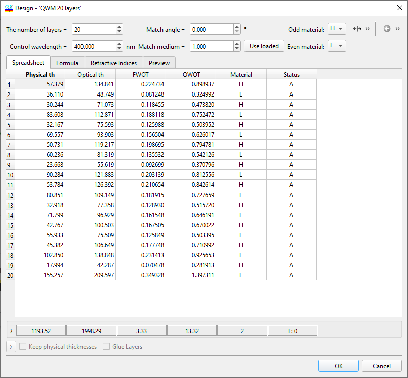

Modify Design
Modify Design
Navigation: OptiLayer Menu Commands > Synthesis Menu >
Modify Design
` <idh_remove_thin_layers.html>`__ ` <idh_menu_synthesis.html>`__ ` <modify_stack.html>`__
When you select the Edit command from the menu bar of the Design database access window, your changes are applied only to the database files and do not affect the design currently in memory. When you select the Modify Design command from the Synthesis menu, your changes are applied only to the design in memory, leaving the database design files unaffected. In this case, the header of the edit window contains the words “Current Design.” This option is useful when you want to use your own experience to guide the design process or experiment with designs. Usually, changing a current design will result in a larger merit function value. To make changes permanent, save the design in the Design database using the Save Design command in the Data menu. You can restore the initial design at any time by reloading it from the History database.

The Apply button allows you to apply modifications without closing the window, while the OK button applies modifications and closes the window. For additional details and a more comprehensive description, refer to: